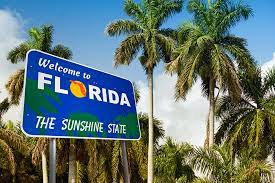

About Florida
Welcome to Florida, the Sunshine State, where you may enjoy never-ending
sunshine, beautiful beaches, and lively cities. Florida has something
for everyone, whether you're a thrill-seeker hoping to visit
world-famous theme parks, a nature lover looking to meander through lush
parks and wildlife reserves, or a culture enthusiast looking to immerse
yourself in the region's diverse arts and history. From Tallahassee's
historic past and Southern beauty to Orlando's family-friendly
attractions and Tampa's bustling cultural scene, Florida offers
remarkable experiences. Here, you may soak up the sun on scenic beaches,
eat excellent seafood with an ocean view, or venture into the Everglades
to see the state's diverse wildlife.
Diverse Regions
The region of North Florida is abundant in historical significance and
breathtaking natural landscapes. Tallahassee, the capital city of the
state, is the central hub for both cultural and political activities in
this region. North Florida is renowned for its sloping terrain, roads
shaded by oak trees, and significant historical sites.
Central Florida is most famous for its world-renowned theme parks,
making it a top destination for families and thrill-seekers alike.
Orlando, often referred to as the "Theme Park Capital of the World," is
home to Walt Disney World, Universal Orlando Resort, and SeaWorld
Orlando.
The Gulf Coast offers a mix of urban and natural attractions, from the
vibrant nightlife and culinary scene in Tampa to the pristine white sand
beaches of Clearwater and St. Pete Beach. The region is also home to
major sports teams, including the Tampa Bay Buccaneers and Tampa Bay
Lightning, and hosts numerous festivals and events throughout the year.

Florida is renowned for its tropical temperature, stunning coastlines,
and rich cultural legacy. To obtain additional information, please
visit the official website of Visit Florida.
For more information, visit the
Visit Florida
website.
Population
Florida is the nation's most densely populated state in the southeastern
region and ranks as the second most densely populated state in the
Southern region, following Texas. The state capitol of Florida is
Tallahassee, situated in the northwestern panhandle region.